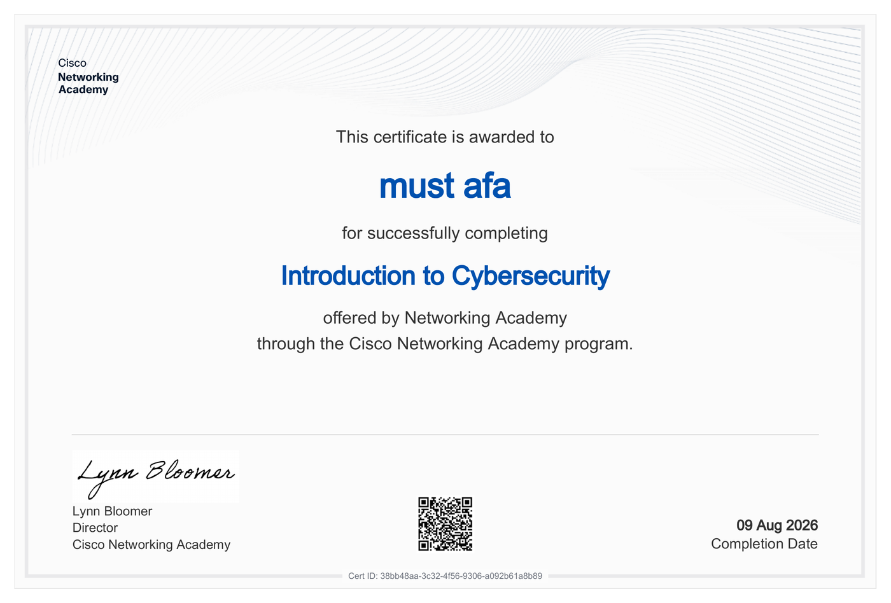

Focused on cybersecurity and networking with hands-on experience in penetration testing tools and networking fundamentals. Proficient in C and Python, with a strong interest in network engineering, network installation and configuration, and network security.
Network architecture and communication protocols for a multi-agent crisis management system serving Palestinian blood banks.
Self-hosted Debian infrastructure running Docker services — Tailscale, Pi-hole, Uptime Kuma, and self-developed web apps.
React network operations dashboard backed by Headscale, Uptime Kuma, and Grafana in Docker Compose.
Multi-layer enterprise network built in Cisco Packet Tracer, covering routing, switching, VLANs, and ACLs.
Simulated an energy-aware, QoS-enhanced clustering algorithm for wireless sensor networks. Investigates routing efficiency, energy consumption, and network lifetime in IoT environments.
DOI: 10.13140/RG.2.2.36348.09607Cisco Networking Academy
